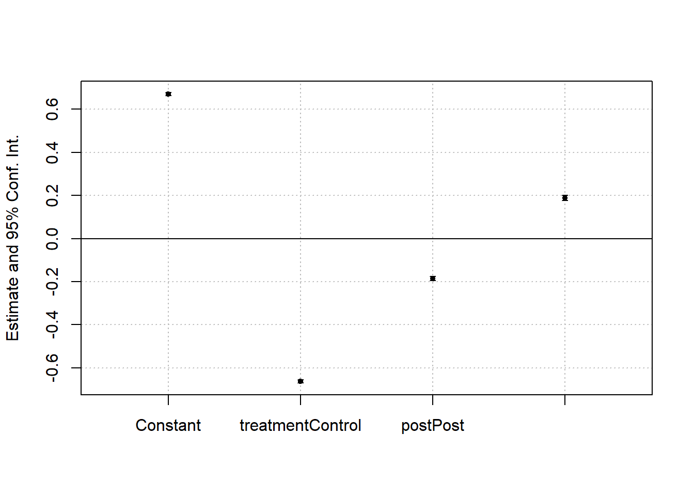

R version:
R.version
_ platform x86_64-w64-mingw32 arch x86_64 os mingw32 crt ucrt system x86_64, mingw32 status major 4 minor 2.2 year 2022 month 10 day 31 svn rev 83211 language R version.string R version 4.2.2 (2022-10-31 ucrt) nickname Innocent and Trusting
Libraries:
library(tidyverse) library(fixest) library(broom) library(scales)
Data:
firm_table <- read_rds("../../01_DATA/APS/core_sample_assigned.rds") firm_table <- firm_table %>% select(anio_fiscal, identificacion_informante_anon, group_assign, porcentaje_aps_pff, porcentaje_aps_ext) %>% mutate(across(c(porcentaje_aps_pff,porcentaje_aps_ext), ~.x/100))
Data preparation:
reg_table <- firm_table %>% filter(group_assign %in% c("C-Min","C-Maj","T-Min","T-Maj")) %>% mutate( post = as.numeric(anio_fiscal >= 2015), post = factor(post,levels = c(0,1), labels = c("Pre","Post")), treatment = as_factor(group_assign), treatment = fct_collapse(treatment, Control = c("C-Min","C-Maj"), treatment = c("T-Min","T-Maj")) ) %>% select( pff_p = porcentaje_aps_pff, post, treatment, anio_fiscal, firm_id = identificacion_informante_anon )
model <- lm(data = reg_table, formula = pff_p ~ treatment + post + treatment:post) coefplot(model)

summary(model)
Call: lm(formula = pff_p ~ treatment + post + treatment:post, data = reg_table) Residuals: Min 1Q Median 3Q Max -0.66932 -0.01027 -0.00709 -0.00709 0.99291 Coefficients: Estimate Std. Error t value Pr(>|t|) (Intercept) 0.669322 0.003662 182.77 <2e-16 *** treatmentControl -0.662235 0.004029 -164.35 <2e-16 *** postPost -0.185411 0.005208 -35.60 <2e-16 *** treatmentControl:postPost 0.188597 0.005727 32.93 <2e-16 *** --- Signif. codes: 0 '***' 0.001 '**' 0.01 '*' 0.05 '.' 0.1 ' ' 1 Residual standard error: 0.1853 on 29246 degrees of freedom (583 observations deleted due to missingness) Multiple R-squared: 0.5822, Adjusted R-squared: 0.5821 F-statistic: 1.358e+04 on 3 and 29246 DF, p-value: < 2.2e-16
fe_model <- feols(data = reg_table, fml = pff_p ~ treatment + post + treatment:post, index = c("anio_fiscal","firm_id")) coefplot(fe_model)
summary(fe_model)
OLS estimation, Dep. Var.: pff_p Observations: 29,250 Standard-errors: IID Estimate Std. Error t value Pr(>|t|) (Intercept) 0.669322 0.003662 182.7660 < 2.2e-16 *** treatmentControl -0.662235 0.004029 -164.3502 < 2.2e-16 *** postPost -0.185411 0.005208 -35.6015 < 2.2e-16 *** treatmentControl:postPost 0.188597 0.005727 32.9285 < 2.2e-16 *** --- Signif. codes: 0 '***' 0.001 '**' 0.01 '*' 0.05 '.' 0.1 ' ' 1 RMSE: 0.185317 Adj. R2: 0.582118
reg_table <- reg_table %>% mutate(lop_pff = log(((pff_p*100) + 1)/100))
model <- lm(data = reg_table, formula = lop_pff ~ treatment + post + treatment:post) coefplot(model)
Call: lm(formula = lop_pff ~ treatment + post + treatment:post, data = reg_table) Residuals: Min 1Q Median 3Q Max -3.7507 -0.0669 -0.0529 -0.0529 4.5622 Coefficients: Estimate Std. Error t value Pr(>|t|) (Intercept) -0.85448 0.01668 -51.23 <2e-16 *** treatmentControl -3.69779 0.01835 -201.48 <2e-16 *** postPost -1.03920 0.02372 -43.81 <2e-16 *** treatmentControl:postPost 1.05317 0.02609 40.37 <2e-16 *** --- Signif. codes: 0 '***' 0.001 '**' 0.01 '*' 0.05 '.' 0.1 ' ' 1 Residual standard error: 0.8441 on 29246 degrees of freedom (583 observations deleted due to missingness) Multiple R-squared: 0.6768, Adjusted R-squared: 0.6768 F-statistic: 2.042e+04 on 3 and 29246 DF, p-value: < 2.2e-16
fe_model <- feols(data = reg_table, fml = lop_pff ~ treatment + post + treatment:post, index = c("anio_fiscal","firm_id")) coefplot(fe_model)
OLS estimation, Dep. Var.: lop_pff Observations: 29,250 Standard-errors: IID Estimate Std. Error t value Pr(>|t|) (Intercept) -0.854476 0.016680 -51.2272 < 2.2e-16 *** treatmentControl -3.697785 0.018353 -201.4840 < 2.2e-16 *** postPost -1.039200 0.023721 -43.8098 < 2.2e-16 *** treatmentControl:postPost 1.053167 0.026087 40.3714 < 2.2e-16 *** --- Signif. codes: 0 '***' 0.001 '**' 0.01 '*' 0.05 '.' 0.1 ' ' 1 RMSE: 0.844062 Adj. R2: 0.676803
reg_2014 <- reg_table %>% filter(anio_fiscal == 2014) %>% select(firm_id, pff_2014 = pff_p) reg_table <-reg_table %>% left_join(reg_2014) %>% mutate(pff_rel = if_else( pff_2014 == 0 | is.na(pff_2014), NA_real_, pff_p/pff_2014 ))
model <- lm(data = reg_table, formula = pff_rel ~ treatment + post + treatment:post) coefplot(model)
Call: lm(formula = pff_rel ~ treatment + post + treatment:post, data = reg_table) Residuals: Min 1Q Median 3Q Max -2308 -1 0 0 261592 Coefficients: Estimate Std. Error t value Pr(>|t|) (Intercept) 0.9276 93.5069 0.010 0.992 treatmentControl 1564.9996 362.0845 4.322 1.57e-05 *** postPost -0.2409 132.9757 -0.002 0.999 treatmentControl:postPost 742.3513 512.2557 1.449 0.147 --- Signif. codes: 0 '***' 0.001 '**' 0.01 '*' 0.05 '.' 0.1 ' ' 1 Residual standard error: 4732 on 5428 degrees of freedom (24401 observations deleted due to missingness) Multiple R-squared: 0.01082, Adjusted R-squared: 0.01028 F-statistic: 19.8 on 3 and 5428 DF, p-value: 9.25e-13
fe_model <- feols(data = reg_table, fml = pff_rel ~ treatment + post + treatment:post, index = c("anio_fiscal","firm_id")) coefplot(fe_model)
OLS estimation, Dep. Var.: pff_rel Observations: 5,432 Standard-errors: IID Estimate Std. Error t value Pr(>|t|) (Intercept) 0.927645 93.5069 0.009921 9.9208e-01 treatmentControl 1564.999645 362.0845 4.322194 1.5725e-05 *** postPost -0.240855 132.9757 -0.001811 9.9855e-01 treatmentControl:postPost 742.351251 512.2557 1.449181 1.4734e-01 --- Signif. codes: 0 '***' 0.001 '**' 0.01 '*' 0.05 '.' 0.1 ' ' 1 RMSE: 4,730.3 Adj. R2: 0.010277
reg_table <- firm_table %>% filter(group_assign %in% c("C-Min","C-Maj","T-Min","T-Maj")) %>% mutate( post = as.numeric(anio_fiscal >= 2015), post = factor(post,levels = c(0,1), labels = c("Pre","Post")), treatment = as_factor(group_assign), treatment = fct_collapse(treatment, Control = c("C-Min","C-Maj"), treatment = c("T-Min","T-Maj")), participation = if_else( treatment == "Control", porcentaje_aps_ext,porcentaje_aps_pff ) ) %>% select( participation, post, treatment, anio_fiscal, firm_id = identificacion_informante_anon )
model <- lm(data = reg_table, formula = participation ~ treatment + post + treatment:post) coefplot(model)
Call: lm(formula = participation ~ treatment + post + treatment:post, data = reg_table) Residuals: Min 1Q Median 3Q Max -0.66932 -0.42366 0.05745 0.34534 0.51609 Coefficients: Estimate Std. Error t value Pr(>|t|) (Intercept) 0.669322 0.007856 85.198 < 2e-16 *** treatmentControl -0.014666 0.008644 -1.697 0.0898 . postPost -0.185411 0.011172 -16.596 < 2e-16 *** treatmentControl:postPost 0.073301 0.012287 5.966 2.46e-09 *** --- Signif. codes: 0 '***' 0.001 '**' 0.01 '*' 0.05 '.' 0.1 ' ' 1 Residual standard error: 0.3976 on 29246 degrees of freedom (583 observations deleted due to missingness) Multiple R-squared: 0.02559, Adjusted R-squared: 0.02549 F-statistic: 256.1 on 3 and 29246 DF, p-value: < 2.2e-16
fe_model <- feols(data = reg_table, fml = participation ~ treatment + post + treatment:post, index = c("anio_fiscal","firm_id")) coefplot(fe_model)
OLS estimation, Dep. Var.: participation Observations: 29,250 Standard-errors: IID Estimate Std. Error t value Pr(>|t|) (Intercept) 0.669322 0.007856 85.19823 < 2.2e-16 *** treatmentControl -0.014666 0.008644 -1.69671 8.9761e-02 . postPost -0.185411 0.011172 -16.59600 < 2.2e-16 *** treatmentControl:postPost 0.073301 0.012287 5.96600 2.4593e-09 *** --- Signif. codes: 0 '***' 0.001 '**' 0.01 '*' 0.05 '.' 0.1 ' ' 1 RMSE: 0.397539 Adj. R2: 0.025494
reg_table <- reg_table %>% mutate(lop_participation = log(((participation*100) + 1)/100))
model <- lm(data = reg_table, formula = lop_participation ~ treatment + post + treatment:post) coefplot(model)
Call: lm(formula = lop_participation ~ treatment + post + treatment:post, data = reg_table) Residuals: Min 1Q Median 3Q Max -3.7839 -0.5650 0.7888 0.8976 1.9036 Coefficients: Estimate Std. Error t value Pr(>|t|) (Intercept) -0.85448 0.03264 -26.177 < 2e-16 *** treatmentControl 0.03319 0.03592 0.924 0.355 postPost -1.03920 0.04642 -22.387 < 2e-16 *** treatmentControl:postPost 0.30898 0.05105 6.052 1.45e-09 *** --- Signif. codes: 0 '***' 0.001 '**' 0.01 '*' 0.05 '.' 0.1 ' ' 1 Residual standard error: 1.652 on 29246 degrees of freedom (583 observations deleted due to missingness) Multiple R-squared: 0.05599, Adjusted R-squared: 0.05589 F-statistic: 578.2 on 3 and 29246 DF, p-value: < 2.2e-16
fe_model <- feols(data = reg_table, fml = lop_participation ~ treatment + post + treatment:post, index = c("anio_fiscal","firm_id")) coefplot(fe_model)
OLS estimation, Dep. Var.: lop_participation Observations: 29,250 Standard-errors: IID Estimate Std. Error t value Pr(>|t|) (Intercept) -0.854476 0.032642 -26.176889 < 2.2e-16 *** treatmentControl 0.033194 0.035916 0.924212 3.5538e-01 postPost -1.039200 0.046421 -22.386630 < 2.2e-16 *** treatmentControl:postPost 0.308978 0.051051 6.052321 1.4451e-09 *** --- Signif. codes: 0 '***' 0.001 '**' 0.01 '*' 0.05 '.' 0.1 ' ' 1 RMSE: 1.6518 Adj. R2: 0.05589
reg_2014 <- reg_table %>% filter(anio_fiscal == 2014) %>% select(firm_id, p_2014 = participation) reg_table <-reg_table %>% left_join(reg_2014) %>% mutate(p_rel = if_else( p_2014 == 0 | is.na(p_2014), NA_real_, lop_participation/p_2014 ))
model <- lm(data = reg_table, formula = p_rel ~ treatment + post + treatment:post) coefplot(model)
Call: lm(formula = p_rel ~ treatment + post + treatment:post, data = reg_table) Residuals: Min 1Q Median 3Q Max -81.993 0.349 3.509 4.051 5.680 Coefficients: Estimate Std. Error t value Pr(>|t|) (Intercept) -3.4987 0.1851 -18.905 < 2e-16 *** treatmentControl -0.1190 0.2036 -0.585 0.559 postPost -1.9940 0.2632 -7.577 3.65e-14 *** treatmentControl:postPost 0.3397 0.2894 1.174 0.241 --- Signif. codes: 0 '***' 0.001 '**' 0.01 '*' 0.05 '.' 0.1 ' ' 1 Residual standard error: 9.365 on 29246 degrees of freedom (583 observations deleted due to missingness) Multiple R-squared: 0.008346, Adjusted R-squared: 0.008245 F-statistic: 82.05 on 3 and 29246 DF, p-value: < 2.2e-16
fe_model <- feols(data = reg_table, fml = p_rel ~ treatment + post + treatment:post, index = c("anio_fiscal","firm_id")) coefplot(fe_model)
OLS estimation, Dep. Var.: p_rel Observations: 29,250 Standard-errors: IID Estimate Std. Error t value Pr(>|t|) (Intercept) -3.498652 0.185061 -18.905404 < 2.2e-16 *** treatmentControl -0.119048 0.203618 -0.584661 5.5878e-01 postPost -1.994003 0.263174 -7.576738 3.6482e-14 *** treatmentControl:postPost 0.339673 0.289427 1.173606 2.4056e-01 --- Signif. codes: 0 '***' 0.001 '**' 0.01 '*' 0.05 '.' 0.1 ' ' 1 RMSE: 9.36461 Adj. R2: 0.008245